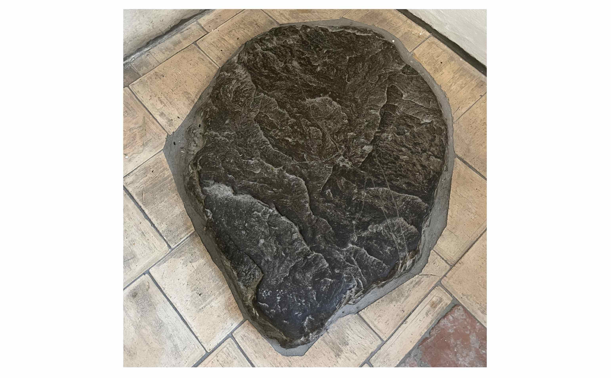

Tänikon ist heute ein Standort der Agroscope (Kompetenzzentrum des Bundes für die Forschung und Entwicklung im Agrar-, Ernährungs-, und Umweltbereich, aktiv an verschiedenen Standorten). Das Areal ist eingebettet in ein naturreiches Gebiet rund um den Tänikoner Weiher. Unmittelbar neben dem Weiher steht die geschichtsträchtige ehemalige Klosterkirche der Zisterzienserinnen von Tänikon, die heute als Pfarrkirche dient.
Die Schwesterngemeinschaft von Tänikon
Gemäss einer historisch nicht belegbaren Überlieferung soll der heilige Bernhard von Clairvaux (1090–1153) auf seiner Reise durch das damalige Bistum Konstanz in Tänikon, das als «Tanninchova» seit 789 urkundlich bezeugt und somit der älteste erwähnte Ort der heutigen Thurgauer Gemeinde Aadorf ist, eine Predigt gehalten haben. Diese Reise führte ihn vermutlich über Wil und Winterthur, so dass diese Predigt nicht auszuschliessen ist, da Tänikon zwischen diesen beiden Ortschaften liegt. In der Sakristei der Klosterkirche ist ein Stein zu sehen, auf dem der heilige Bernhard angeblich gepredigt hat. Hier soll das spätere Zisterzienserinnenkloster entstanden sein.
Der Stein in der Sakristei, auf dem Bernhard von Clairvaux gepredigt haben soll. (Bild: Martin Brunner)
Im Privileg (eine besondere Form einer Papsturkunde) vom 20. Dezember
1249 von Papst Innozenz IV. (1195–1254) wird von einem neu gegründeten
Kloster gesprochen. Die Gründung des Klosters könnte auch mit den
Edelleuten von Bichelsee, Eberhard II. und seinem Sohn Eberhard III.,
zusammenhängen, die mit ihren Schenkungen beabsichtigten, einen Konvent
ins Leben zu rufen und für dessen anfänglichen Unterhalt zu sorgen.
Diese Schenkung bestätigte Abt Bertold von St. Gallen (†1272) am 12.
Juni 1257. Der Text ist auf Pergament in lateinischer Sprache abgefasst.
Er handelt von Schenkungen, die gemacht worden sind, um dieses
Zisterzienserinnenkloster zu gründen und den frommen Frauen ihre Wünsche
zu erfüllen. Die Urkunde trägt das Siegel von Abt Bertold von St. Gallen
und dessen Konvent. Seit der Aufhebung des Klosters im Jahre 1848 wird
diese Urkunde im Staatsarchiv Thurgau in Frauenfeld aufbewahrt.
Die Urkunde bezeugt, dass bereits vor der Klostergründung fromme Frauen
in Tänikon waren. In der Chronik findet man Berichte, dass es sich um
Betschwestern oder sogenannte Beginen (Mitglieder einer religiösen
Gemeinschaft, ohne einem Orden verpflichtet zu sein) handeln muss, die
in der Nähe wohnten (ein Quartier in Guntershausen heisst heute noch
‹Altkloster›). Es gibt zahlreiche päpstliche Bullen und Urkunden, die
die Aufnahme der Schwestergemeinschaft von Tänikon in den
Zisterzienserorden belegen. Die Wichtigste sei hier genannt:
Am 1. September 1255 gab Bischof Eberhard von Konstanz (†1274) der
‹Meisterin› und den Schwestern zu «Tennichoven» die Erlaubnis, sich dem
Zisterzienserorden einverleiben zu lassen. Es dauerte aber noch bis zum
6. Mai 1263, bis die Vorsteherin auch wirklich ‹Äbtissin› genannt wurde.
Nach der Aufnahme der Frauen in den Zisterzienserorden entwickelte sich
das Kloster nicht nur zum geistlichen Zentrum, sondern weitete sich auch
zum kulturellen und politischen Zentrum aus. Tänikon bekam fortan immer
mehr Schenkungen und durfte sich an einem immer grösser werdenden Kreis
von Gönner:innen freuen. Eine besondere Bereicherung an Land und Geld
erfuhr das Kloster durch die Jahrzeitstiftungen (Anniversarien), die von
Adeligen oder sonst begüterten Familien gestiftet wurden.
Klosterkirche Tänikon, heute Pfarrkirche St. Bernhard, links das ehemalige Refektorium. (Bild: Martin Brunner)
Die Gerichtsherrschaft Tänikon
Das Kloster Tänikon übte die niedere Gerichtsbarkeit aus. Ab dem 15.
Jahrhundert unterstanden diesem Gericht die Ortschaften Aadorf,
Ettenhausen, Guntershausen, Iltishausen, Maischhausen und Wittershausen.
In diesem niederen Gericht kamen alle zivilen Fälle zur Rechtsprechung
wie Beurkundungen, Konkurse, Kauf und Verkauf sowie auch Übertretungen
gegenüber der Rechtsordnung wie Frevel in Wald und Flur, leichte
Körperverletzungen bei Raufereien und Ehrverletzungen.
Formell amtete im niederen Gericht von Tänikon die Äbtissin des
Zisterzienserinnenklosters als ‹Gerichtsherr›, allerdings ist sie, wie
es sich für eine Person aus dem geistlichen Stand gehört, nie selbst
erschienen. Die Anwesenheit wurde dem Klosterammann oder einem
Vertreter, einem sogenannten Stabhalter, überlassen. Alle Beurkundungen
wurden jedoch mit dem Siegel der Äbtissin versehen. Am Gerichtstag
erinnerte ein dreimaliges Läuten der grossen Glocken die Untertanen
nochmals an die Gerichtsverhandlung und vor allem an die
Teilnahmepflicht.
Die Zeit der Reformation (1524–1548)
Huldrych Zwinglis (1484–1531) neue Lehre, die in Zürich in den Jahren
1520 bis 1524 Einzug hielt, fand über Elgg den Weg in die Gemeinden des
Tänikoner Gerichts. Die Konventsfrauen traten zum neuen Glauben über,
ermuntert von ihrem geistlichen Beistand, dem Abt der Konventsmitglieder
von Kappel. Die Mehrzahl der Frauen verliessen das Kloster und haben
geheiratet. Zürich versuchte die Gunst der Zeit zum eigenen Vorteil zu
nutzen und die Herrschaft auf die Thurgauer Grenzgebiete auszudehnen.
Nach dem Zusammenbruch des Kappeler Konvents hat sich der Rat von Zürich
als weltliche Behörde die Rolle als Visitator in Tänikon zugeschrieben.
Äbtissin Anna Wälter II. berichtete 1525 dem Rat von Zürich, dass von
den dreizehn früheren Konventsfrauen neun ausgetreten sind und
geheiratet haben. Im Oktober des Jahres 1528 wurden in Tänikon die
Altäre und alle Bilder aus der Kirche entfernt und gemäss Überlieferung
ausserhalb der Umfriedung der Klosteranlage nahe der Lützelmurg
verbrannt.
Der zweite Kappeler Krieg im Oktober 1531 brachte den Zürchern und ihren
Anhängern eine Niederlage und entzog ihnen in der Folge die alleinige
Verwaltung Tänikons. Erst im Jahre 1545 erlebte das Kloster zu Tänikon
unter Abt Markus Schenklin von Fischingen wieder einen neuen Aufschwung.
Bis zum Ausbruch der Französischen Revolution durchlebte das Kloster
zwei Jahrhunderte lang eine ruhigere, von äusseren Störungen weitgehend
freie Zeit. Es herrschte eine Verwaltung, die mit dem Vermögen und dem
Besitz äusserst sparsam umging. So kam das Kloster rasch wieder auf den
Stand wie vor der Reformation. Durch die Einführung der sogenannten
Kommunität (Befolgung strenger gefasster Klausurbestimmungen), der
gemeinsamen Lebensweise und des gemeinsamen Eigentums, gelang durch
Äbtissin Veronika von Grüt (Amtszeit 1608–†1617) im Jahre 1609 auch
innerhalb des Klosters eine Erneuerung. Die Beharrlichkeit der
Äbtissinnen führte zusammen mit der Unterstützung des nahe gelegenen
Kloster Fischingen und den römisch-katholischen Ständen dazu, dass im
17. Jahrhundert fast die gesamte Bevölkerung der Gerichtsherrschaft
Tänikon zum alten Glauben zurückfand.
Die Klosterkirche heute. (Bild: Martin Brunner)
Das Kloster in der neueren Zeit
Ab etwa 1830 gelangten immer mehr Politiker aus dem Thurgau zur
Überzeugung, die Klöster seien reich und hätten keinerlei gemeinnützige
Wirkung. Am 27. Juni 1848 folgte der Grosse Rat dem Kommissionsantrag
und beschloss die Aufhebung aller Klöster; auch das
Zisterzienserinnenkloster in Tänikon blieb nicht verschont. Die
Konventsfrauen durften auf ihr Ersuchen hin im südlichen Kreuzgangflügel
und den anliegenden Räumen gegen Miete in ihrem Kloster bleiben.
Infolge Bauarbeiten der neuen Besitzer wurde das Kloster massiv
beschädigt. Die Tänikoner Nonnen zogen 1853 in das ehemalige
Kapuzinerkloster in Frauenfeld, und hofften auf eine Rückkehr an den
malerischen Ort. 1869 schlossen sie sich den Zisterzienserinnen aus den
ebenfalls vom Grossen Rat Thurgau aufgehobenen Abteien Kalchrain und
Feldbach im vorarlbergischen Gwiggen an. Dort führten die Tänikoner
Nonnen in der neugegründeten Zisterzienserinnenabtei Mariastern-Gwiggen
ihr Ordensleben weiter. Die Abtei Mariastern-Gwiggen ist somit der
Nachfolgekonvent der drei Thurgauer Abteien Kalchrain, Feldbach und
Tänikon.
Die Klosterkirche St. Bernhard Tänikon ist Pfarrkirche der Pfarrei St.
Bernhard Tänikon. Der Dachstuhl der Klosterkirche, der 2001–2003
aufwendig restauriert wurde, lässt die Kirche zu einem herausragenden
Baudenkmal werden, die unter eidgenössischem Denkmalschutz steht: Die
ältesten noch erhaltenen und tragenden Balken stammen aus dem Jahre
1362. Somit ist dieser Dachstuhl einer der ältesten im deutschen
Sprachraum.
Es zeugen nicht nur die historischen Balken von der denkmalpflegerischen
Bedeutsamkeit dieses Ortes. Bernhard von Clairvaux, einer der
einflussreichsten Mönche des Zisterzienserordens, ist bis heute
Kirchenpatron der Pfarrkirche. Die vielfältige und wechselhafte
Geschichte des Zisterzienserinnenklosters Tänikon zeichnet das Schicksal
einer Gemeinschaft nach und zeigt auf, welche Auswirkungen die
Reformation für einzelne Gemeinschaften und die da lebenden Nonnen
hatten. Dieser grosse Einschnitt hat die kirchliche und religiöse
Landschaft der Schweiz verändert und geprägt.
Der Dachstuhl mit den ältesten Balken von1362. (Bild: Martin Brunner)
Martin Brunner ist Bachelor-Student an der Theologischen Hochschule Chur
Weitere Artikel von {{ author.author }} finden Sie hier:
Zur Vertiefung:
- Zehnder, Herbert: Tänikon, Gerichtsstäte, Zisterzienser Frauenkloster, Gerichtsherrschaft, Kirchgemeinde und Forschungsanstalt, herausgegeben von der römisch-katholischen Kirchengemeinde Tänikon, 1992.
- Archiv: Staatsarchiv des Kantons Thurgau TUB III Nr. 379, Datum 12.06.1257